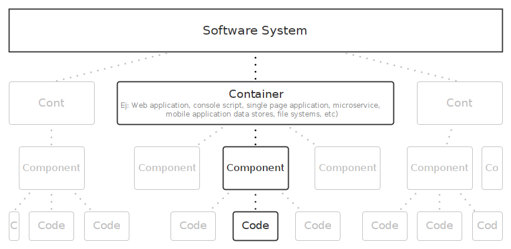
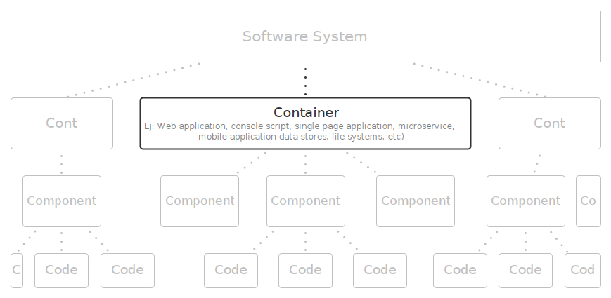
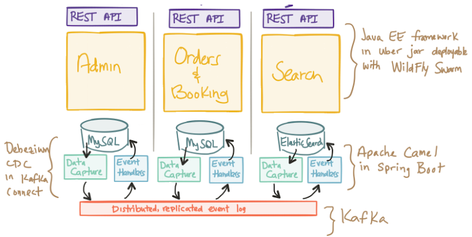
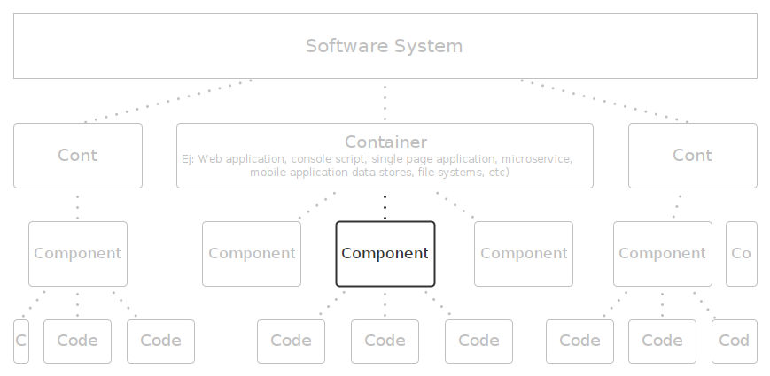
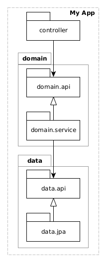
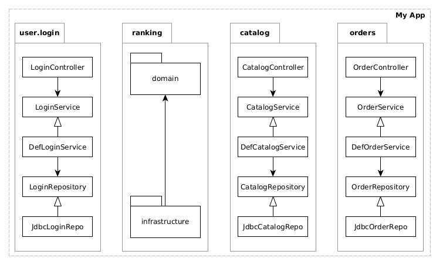
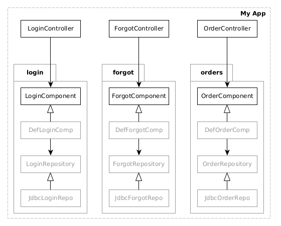

Paquetes, Diseño y Código
Enrique Molinari
Model C4 / Abstraciones
Containers
Containers
¿Rest API y Admin, son contenedores distintos?
Components
Estructuras de Componentes o Módulos
¿Por qué debemos partir una aplicacion en componentes o módulos? y ¿Por qué definir sus relaciones y respetarlas?
Porque cuando hagamos un cambio tendremos noción de donde éste repercute.
Porque de esa forma tenemos "pequeños sistemas" más simples. Mas simple implica más facil de modificar.
Layered Architecture

¿Acá tenemos noción donde repercute un cambio?
Layered Architecture

¿y... acá? Esto sucede si no tenemos disciplina!
Estructuras de Componentes o Módulos
¿Existe en Java la keyword Component? o ¿Layer?
Debemos encontrar en el lenguaje de programación que utilicemos, que abstracción (estructura sintáctica) podemos utilizar para crear éstas módulos o componentes. Las clases tienen demasiado detalle.
¿Cuáles son las opciones en Java?
Desde Java v1, los paquetes. Java v9 incorporó la construcción sintáctica module.
Estructuras de Componentes o Módulos
Ok. Tenemos que estructurar aplicaciones Java utilizando paquetes. ¿Qué opciones tengo?
Estructuras de Componentes o Módulos
Además, ni bien abro un proyecto tengo que ver su estructura bien clara. Debe ser evidente que estilo de arquitectura hemos elegido.
"When you look at the top level directory structure, and the source files in the highest level package; what does they scream?" (by Robert C. Martin)

¿Es claro?

"auth" término funcional mezclado con capas horizontales. "exception" ¿es de alguna capa? ¿cuál?. "generic" ¿es de alguna capa? ¿o de todo el sistema?
Architecturally Evident Coding Style

Package by feature

Package by Layers Clásica
Package by Layers (con modelo compartido)

Arquitectura Hexagonal (o ports and adapters)

Package by feature y sub-feature
Package by Component
Code o Classes

Controllers flacos y modelos gordos. Empujen el código hacia lo más cerca del modelo que puedan.
@RestController
public class UserController {
@PostMapping
@ResponseStatus(HttpStatus.CREATED)
@Transactional
public User login(String username, String password) {
u = this.userService.findByName(username);
this.userService.validatePassword(u.getPassword(),password);
String token = getJWTToken(username);
u.setAccessToken(token);
this.userService.save(u);
}
}Controllers flacos y modelos gordos. Empujen el código hacia lo más cerca del modelo que puedan.
@RestController
public class UserController {
@PostMapping
@ResponseStatus(HttpStatus.CREATED)
@Transactional
public User login(String username, String password) {
this.userService.authenticate(username, password);
}
}Exceptions pertenecen a una capa o módulo

Exceptions pertenecen a una capa o módulo

Exceptions, ¿Cómo manejarlas?
Cada capa atrapa y lanza su exception o el framework que uso atrapa cualquiera y muestra mensaje
public class DomainClass {
void doSomething() {
try {
this.repo.doSomething();
} catch(DataException e) {
throw new DomainException(e, "Imposible hacer esto...");
}
}
}
Evitar modelos anémicos
@Entity
public class ClientUser {
...
@Transient
private transient Token t;
@OneToMany(cascade = CascadeType.ALL, fetch = FetchType.LAZY)
@JoinColumn(name = "id_user")
private List roles;
public ClientUser(Long id, String username, String password) {
this(id, username, password, new Role[0]);
}
public ClientUser(Long id, String username, String password, Token t) {
this(id, username, password, new Role[0]);
this.t = t;
}
public ClientUser(Long id, String username, String password, Role... roles) {
this.id = id;
this.username = username;
this.password = new Encriptar(password).value();
this.roles = Arrays.asList(roles);
}
public String generateToken() {
return t.value(this.username);
}
public User toUser() {
return new User() {
@Override
public String userName() {
return userName();
}
@Override
public String token() {
return generateToken();
}
};
}
}
Él mismo genera el Dto usando toUser(). Encripta la clave, genera el token. Análisis de sangren con menos anemia. Si no esta lógica va a parar a los servicios, o peor, a los controllers.
Depender de abstracciones (SOLID principle)
@Entity
public class ClientUser {
...
public ClientUser(Long id, String username, String password, Token t) {
this(id, username, password, new Role[0]);
this.t = t;
}
...
public String generateToken() {
return t.value(this.username);
}
...
}
package user.model;
public interface Token {
String value(String username);
}
Hoy se usa JWT, pero mañana por ahi se usa Paceto.